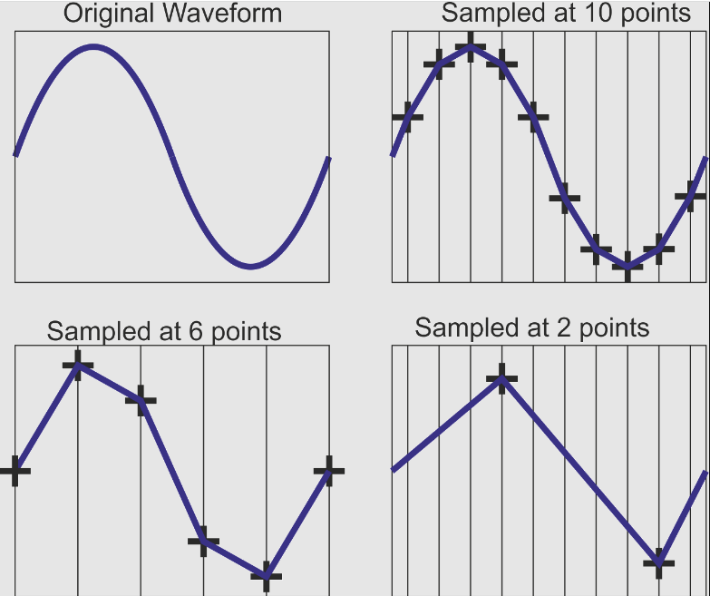
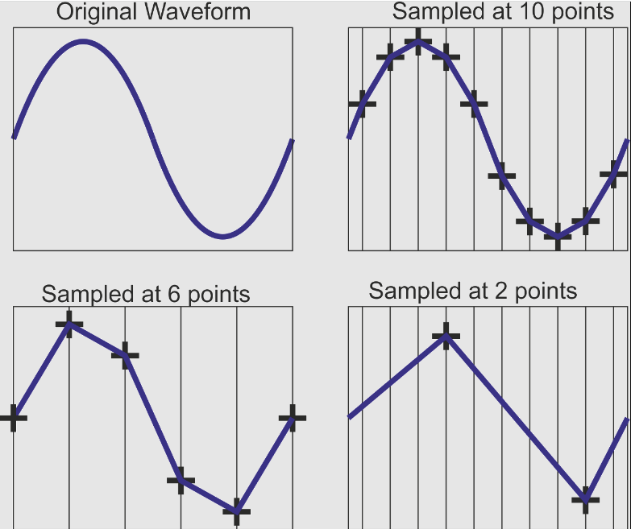

采样率和采样分辨率
Sample Rate and Resolution
采样率 / Sampling Rate
- 采样率是每秒采集的声音样本数量Sampling rate is number of sound samples per second
- 以赫兹(Hz)为单位测量Measured in Hertz (Hz)
- 更高的采样率可以获得更精确的声音Higher sampling rate allows more accurate sound
 

常见标准 / Common Standards
| 用途 / Quality | 采样率 / Rate | 位深 / Bit Depth |
|---|---|---|
| 电话质量 / Phone | 8kHz | 8-bit |
| CD音质 / CD Audio | 44.1kHz | 16-bit |
| 工作室标准 / Studio | 48kHz | 24-bit |
| 高解析度 / Hi-Res | 192kHz | 32-bit |
采样分辨率 / Sampling Resolution
- 每个样本的位数称为采样分辨率 (位深)Number of bits per sample is resolution (bit depth)
- 增加分辨率提高声音的精度Increasing resolution increases accuracy
- 存储更多关于振幅的细节Stores more detail about amplitude
文件大小计算 / File Size Calculation
单声道 / Mono:
采样率 × 采样分辨率 × 时间长度Sample Rate × Resolution × Length
立体声 / Stereo:
上述结果 × 2Above result × 2
质量与效率平衡 / Quality vs Efficiency Balance
- 更高参数 = 更好音质，但更大文件Higher parameters = better quality, larger files
- 更低参数 = 较小文件，但音质降低Lower parameters = smaller files, reduced quality